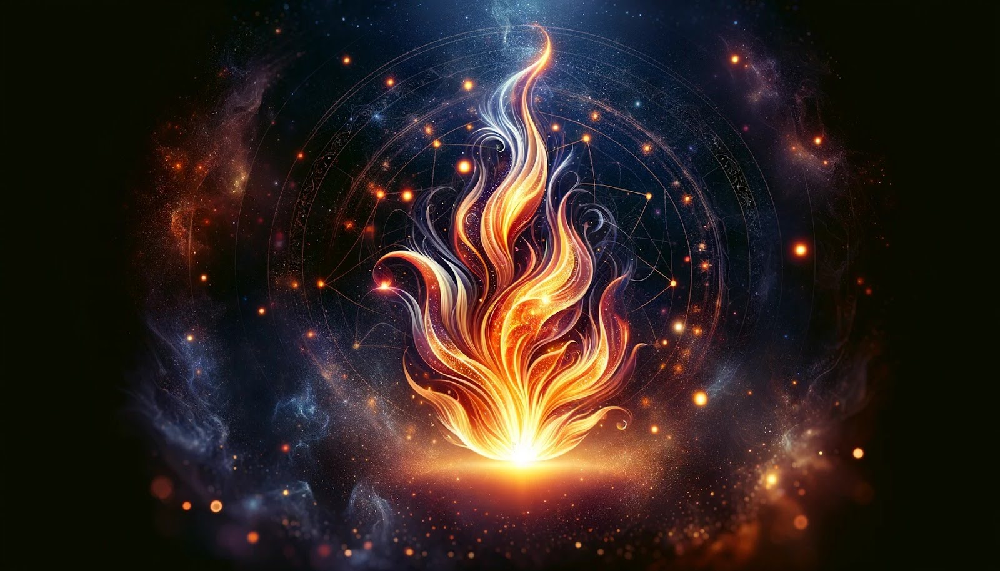
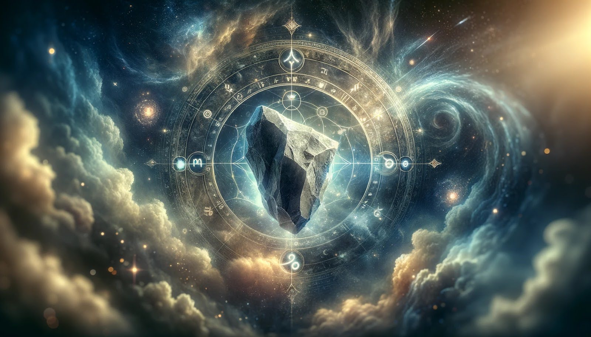
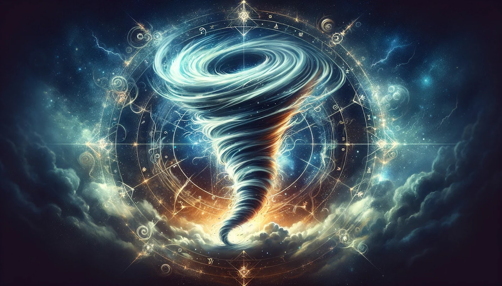
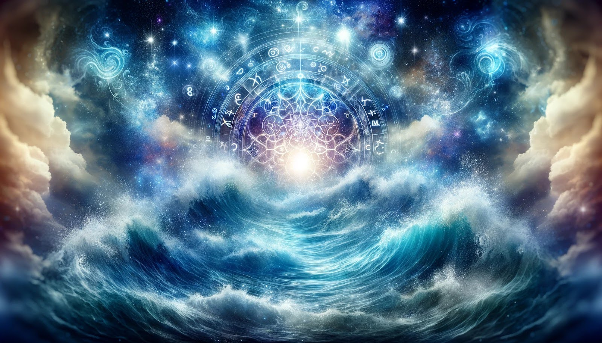
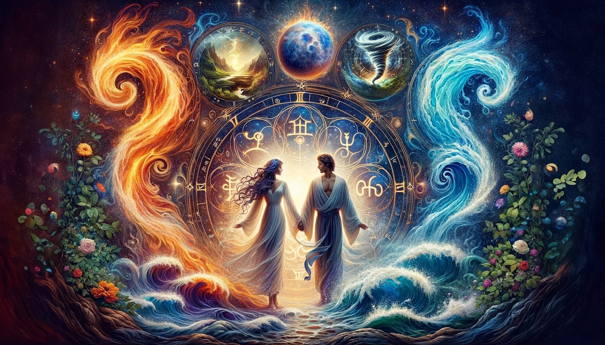

Astrology offers a cosmic blueprint of our personalities, behaviors, and life patterns through the positions of planets and stars at the time of our birth. Central to this celestial guidance are the four astrological elements: Fire, Earth, Air, and Water. These elements represent different types of energy that act within us and in the world around us, influencing our temperament, desires, and the way we interact with others. Understanding the balance and dominance of these elements in your astrological chart can provide profound insights into your inherent nature and how you can harness these energies to navigate life's challenges and opportunities.
The significance of the elements in astrology cannot be overstated. They form the foundation of astrological symbolism, with each of the twelve zodiac signs being governed by one of the four elements. This elemental influence shapes the core of our being, from our passions and instincts to our emotions and intellect. A chart with a prevalence of a particular element points to distinct traits and predispositions in a person's character. Recognizing and understanding this elemental dominance is key to personal growth and achieving a harmonious balance in life.
The four astrological elements—Fire, Earth, Air, and Water—are the essential building blocks of the universe, each with unique characteristics and energies that influence our lives. Fire signs (Aries, Leo, Sagittarius) embody dynamism, passion, and courage. Earth signs (Taurus, Virgo, Capricorn) are grounded, practical, and reliable. Air signs (Gemini, Libra, Aquarius) represent intellect, communication, and socialization. Lastly, Water signs (Cancer, Scorpio, Pisces) are intuitive, emotional, and deeply connected to the realm of feelings. These elements interact within your astrological chart to define your personality, emotions, and life approach, influencing how you think, feel, and act.
Understanding the balance of these elements in your chart is crucial for personal development and well-being. A dominance of one element over the others can shape your outlook and behavior significantly. For instance, a chart heavy with Earth might make you practical and cautious, while lacking in Water could mean you struggle with empathy. By recognizing the elemental forces at play in your chart, you can learn to cultivate a more balanced and fulfilling life, acknowledging your strengths and addressing areas where growth is needed.

Fire signs—Aries, Leo, and Sagittarius—are synonymous with boldness, enthusiasm, and a zest for life. Individuals with a strong Fire presence in their chart are often seen as natural leaders, driven by their passion and boundless energy. They possess an innate confidence and are not afraid to take risks or venture into the unknown. Fire ignites their spirit, compelling them to act on their desires and chase their ambitions with fervor. Their enthusiasm is infectious, often inspiring others to follow their lead and embrace life's possibilities.
However, the intensity of Fire can also lead to impulsiveness and a short temper. Fire sign individuals may find themselves acting on impulse, without fully considering the consequences. Their passion, while a powerful motivator, can sometimes consume them, leading to burnout or conflicts with others who may not share their fervent pace. Learning to temper this fire—channeling its warmth and light without letting it blaze out of control—is a vital lesson for those heavily influenced by Fire in their charts.
Having a significant Fire influence in your astrological chart means you are endowed with an insatiable drive to create, lead, and explore. Life is a grand adventure for Fire-dominated individuals, filled with opportunities for personal triumph and discovery. This elemental force bestows a charismatic presence that draws others to you, along with the courage to face challenges head-on. Your innate optimism and faith in your abilities can propel you to great heights, allowing you to overcome obstacles with bravery and resilience.
Yet, the challenge for those with a strong Fire presence is to maintain balance. The same flames that fuel your ambitions can, if unchecked, lead to recklessness or a domineering attitude. Recognizing the need for moderation and patience, and sometimes stepping back to cool down, is essential. Cultivating practices that ground you and encourage reflection can help temper the fiery energy, ensuring that it serves as a source of strength and inspiration rather than a force of destruction.
To harness the full potential of Fire energy in your chart, embracing its positive aspects while mitigating its excesses is crucial. Engaging in activities that channel your enthusiasm and creativity in constructive ways can be immensely fulfilling. Whether through artistic pursuits, physical challenges, or leadership roles, finding outlets for your dynamic energy can lead to profound self-expression and achievement. At the same time, incorporating calming and grounding practices into your life, such as meditation, yoga, or spending time in nature, can help balance the intensity of Fire, providing the stability needed to sustain your passion without burning out.
Building connections with individuals who complement your fiery nature can also be beneficial. Relationships with Earth and Water signs, for example, can introduce a calming influence, offering the emotional support and practical perspective that can help you channel your fire more effectively. By embracing the warmth and light of your Fire energy while remaining mindful of its power, you can lead a life marked by vibrant enthusiasm, creativity, and a deep sense of fulfillment.

Earth signs—Taurus, Virgo, and Capricorn—embody the qualities of stability, practicality, and realism. These signs are grounded in the material world, valuing hard work, discipline, and reliability above all. Taurus brings a love for life's sensual pleasures and a strong sense of security, Virgo offers meticulous attention to detail and a deep sense of service, while Capricorn is known for its ambition, structure, and perseverance. If you have a lot of Earth influence in your chart, you're likely to be pragmatic and methodical, preferring to build your life's foundations on solid ground. Earth signs are the builders of the zodiac, capable of turning dreams into tangible realities through steady effort and unwavering focus. This connection to the physical world grants them an innate understanding of the importance of patience and the value of time, making them excellent at long-term planning and ensuring their projects and relationships are built to last.
However, the Earth element's focus on practicality and stability can sometimes lead to resistance against change and a tendency towards materialism. Those with strong Earth influence might find it challenging to adapt to new situations that require a departure from their tried-and-tested methods. There can be a predisposition to stick to what's familiar, leading to missed opportunities for growth and exploration. For Earth-dominant individuals, the challenge lies in balancing their need for security and routine with the necessity of embracing change and spontaneity, allowing them to enjoy the fruits of their labor while remaining open to life's unpredictable nature.
The presence of Earth in your astrological chart signifies a grounded approach to life, emphasizing stability, diligence, and a pragmatic outlook. Earth's influence endows you with the ability to remain centered, even in the midst of chaos, providing a solid foundation from which to operate. This element's energy is essential for manifesting ideas into physical reality, as it promotes a methodical and step-by-step approach to achieving goals. If your chart is heavily influenced by Earth, you may find that you excel in environments that require precision, reliability, and a practical application of skills. Your natural affinity for planning and organization makes you a dependable individual, someone others often turn to for solutions to complex problems.
Yet, an overemphasis on Earth energy can lead to an overly conservative or materialistic view of life, potentially stifling creativity and emotional expression. It's important for those with significant Earth in their charts to consciously integrate activities and practices that foster emotional and spiritual growth, ensuring a well-rounded development. Embracing creative pursuits, spending time in nature, and exploring spiritual or philosophical studies can help counterbalance the Earth's density, inviting a lighter, more flexible energy into your life. By acknowledging the strengths and limitations of your Earth influence, you can harness its power to build a fulfilling life that also allows room for growth, change, and emotional depth.
Grounding yourself with Earth's stability involves tapping into the element's inherent qualities of steadiness, resilience, and pragmatism. For those with a strong Earth influence in their charts, this can mean prioritizing routines and practices that enhance your connection to the physical world and your own body. Activities such as gardening, hiking, or engaging in tactile crafts can serve as powerful grounding exercises, helping to anchor your energy in the present moment and the tangible aspects of life. Additionally, focusing on your physical well-being through regular exercise, mindful eating, and self-care rituals can further strengthen your Earth connection, enhancing your natural stability and endurance.
Embracing Earth's stability also involves cultivating an appreciation for the simple things in life and recognizing the value of patience and persistence. Earth-dominant individuals can benefit from setting aside time for reflection and gratitude, acknowledging the incremental progress made towards their goals and the solid foundations they've built. By consciously grounding yourself in Earth's energy, you reinforce your natural resilience and capacity for growth, ensuring that you remain balanced and centered, no matter what challenges life may bring. This deep connection to Earth not only supports your personal and professional endeavors but also fosters a sense of peace and contentment in your daily life.

Air signs—Gemini, Libra, and Aquarius—are the intellects of the zodiac, marked by their keen minds, curiosity, and a knack for communication. If you have a strong Air influence in your chart, you're likely to be a thinker, someone who approaches life with a desire to understand the underlying patterns and connections that bind everything together. Air fuels your ability to conceptualize, reason, and articulate, making you an excellent communicator and problem-solver. This element endows you with a social nature, driven by a fascination with different ideas and perspectives, which makes you adept at navigating diverse social settings and engaging in meaningful conversations.
However, an overabundance of Air energy can lead to overthinking and detachment. Individuals heavily influenced by Air might find themselves caught in the web of their thoughts, leading to analysis paralysis or a tendency to intellectualize emotions rather than experiencing them. Balancing this airy nature involves grounding oneself in the physical world and acknowledging the value of emotions and the tangible experiences life offers. Cultivating a mindfulness practice or engaging in activities that connect you to your body and the earth can help in achieving this balance.
Having a lot of Air influence in your astrological chart equips you with remarkable intellectual abilities and a voracious appetite for knowledge. You thrive in environments that stimulate your mind, offering endless opportunities for learning and exchange of ideas. This elemental dominance enhances your communication skills, enabling you to articulate your thoughts with clarity and engage others with your insights and wit. The Air element's presence in your chart suggests a life path where exploration of concepts, innovation, and bridging connections between people and ideas play a central role.
Yet, the challenge for those dominated by Air lies in not getting lost in the realm of thought at the expense of action and emotional connection. To fully harness the potential of your Air qualities, it's important to strike a balance between thinking and doing, ensuring that your brilliant ideas are grounded in reality and translated into concrete achievements. Additionally, fostering emotional intelligence and empathy can enrich your relationships, adding depth and warmth to the intellectual bonds you naturally form.
For individuals with a strong Air presence in their charts, cultivating and balancing this energy involves engaging in activities that stimulate the mind while ensuring a connection to the emotional and physical realms. Engaging in debates, writing, or any form of artistic expression can provide an outlet for your mental energy and creativity. Participating in group activities or community projects can also satisfy your social nature and need for intellectual exchange, while teaching you the value of collaboration and emotional connection.
To balance the sometimes scattered nature of Air, practices that encourage focus and presence, such as meditation, yoga, or even routine physical exercise, can be beneficial. These practices can help ground your mental energy, allowing you to channel your intellectual prowess more effectively. By embracing the lightness and mobility of Air while cultivating a grounded perspective, you can navigate life with intellectual agility and emotional depth, making the most of your natural affinities.

Water signs—Cancer, Scorpio, and Pisces—are the emotional heart of the zodiac, flowing with deep feelings, intuition, and a profound capacity for connection. If your chart is rich in Water, you possess an innate sensitivity that allows you to perceive the emotional undercurrents around you, making you empathetic and nurturing. This strong Water influence endows you with an imaginative and creative spirit, often finding expression in artistic or spiritual pursuits. Your intuitive understanding of others' emotions can make you a compassionate friend and confidant, valued for your empathy and emotional support.
However, the depth of Water's emotional realm can sometimes be overwhelming, leading to moodiness, hypersensitivity, or a tendency to retreat into a shell. Being so in tune with the emotions of others can also blur the boundaries between your feelings and those around you, making it essential to establish healthy emotional boundaries. Learning to manage your emotional waters without letting them flood your sense of self or your ability to engage with the world is a key challenge for those with a significant Water presence in their astrological chart.
A strong Water influence in your chart signifies a life deeply intertwined with the emotional and intuitive realms. You have a natural ability to delve into the depths of the human psyche, understanding and empathizing with the pain and joy of others. This emotional acuity can make you an excellent healer, artist, or caregiver, as you're able to connect with people on a profound level. Your intuition, a direct channel to your subconscious, guides you in making decisions, often leading you to the right place at the right time without a rational explanation.
The challenge for those rich in Water energies lies in not being consumed by their emotional intensity or the emotional states of those around them. It's crucial to develop strategies for emotional resilience, ensuring that your sensitivity becomes your strength rather than a source of vulnerability. Practices like journaling, meditation, and spending time near bodies of water can help you connect with your inner world, allowing you to understand and channel your emotions productively.
For those with a dominant Water influence, nurturing your emotional self while managing its vast depths is crucial. Engaging in creative outlets like painting, music, or writing can be therapeutic, providing a safe space to explore and express your feelings. These activities can also help you tap into your rich inner world, turning your emotional depth into a source of inspiration and insight. Additionally, developing a spiritual practice or connecting with nature can provide a sense of grounding and peace, helping you to navigate the ebb and flow of your emotions with greater ease.
Establishing boundaries is also essential for maintaining emotional health. Learning to distinguish your feelings from those of others and saying no when necessary can prevent emotional overload. Surrounding yourself with supportive and understanding people who respect your need for emotional space and depth can also contribute to your well-being. By honoring your emotional nature and cultivating resilience, you can navigate life's waters with grace, using your intuitive and empathetic gifts to enrich both your own life and the lives of those around you.
Elemental balance in your astrological chart is key to understanding the multifaceted nature of your personality and how you interact with the world around you. A balanced chart will have a relatively even distribution of Fire, Earth, Air, and Water influences, each contributing to different aspects of your being. Fire fuels your passions and ambitions, Earth keeps you grounded, Air stimulates your intellect and communication, and Water governs your emotions and intuition. If your chart shows a balance among these elements, you likely possess a well-rounded personality, capable of adapting to various situations with ease and grace. This equilibrium allows you to flow seamlessly from thought to feeling, from action to reflection, making you versatile and resilient in the face of life's challenges.
Conversely, an imbalance in your elemental distribution can highlight areas of strength and potential growth. For example, a chart with a predominance of Air might indicate a highly intellectual individual, possibly at the expense of emotional depth or practicality. Recognizing the elemental make-up of your chart is the first step towards self-awareness and personal development. It can guide you in identifying innate talents and areas where you might need to seek balance, either through personal growth, lifestyle changes, or surrounding yourself with complementary energies that offset any elemental excess or deficiency.
Elemental dominance in your astrological chart profoundly shapes your personality and can guide your life path. If you have a lot of Fire in your chart, you're likely to be driven, enthusiastic, and bold, often drawn to careers or lifestyles that allow for independence and leadership. An Earth dominance suggests a practical, reliable nature, gravitating towards stable environments and tangible achievements. Strong Air influence denotes a thinker, someone who thrives on intellectual stimulation, often finding fulfillment in academic, literary, or communicative fields. A dominant Water presence indicates a deeply emotional and intuitive individual, drawn to artistic, healing, or caregiving professions.
This elemental dominance not only influences your personal inclinations and talents but also how you approach challenges and opportunities. Fire may push you to take risks and charge ahead, while Earth might make you more cautious and methodical. Air could lead you to analyze and strategize, whereas Water might encourage you to trust your instincts and emotions. Recognizing the dominant elements in your chart can help you understand your natural tendencies and how they align with your life's journey, allowing you to make choices that resonate with your intrinsic nature and fulfill your potential.
Elemental deficiencies in your astrological chart can point to areas in life where you might face challenges or feel less naturally adept. For instance, a lack of Earth might mean you struggle with practicality and staying grounded, while a deficiency in Water could indicate difficulty in accessing and expressing emotions. Addressing these deficiencies is crucial for achieving personal harmony and well-being. This can involve consciously developing qualities associated with the lacking element, such as stability and reliability for Earth or empathy and sensitivity for Water. Engaging in activities that resonate with the missing element can also help; for example, spending time in nature could soothe a lack of Earth, while creative pursuits might awaken dormant Water energies.
Cultivating relationships with people who embody the qualities of your deficient element can also provide balance. Their influence can be both inspiring and healing, helping to fill the gaps in your elemental constitution. This approach to addressing deficiencies is not about changing who you are but rather enriching your character by integrating diverse energies into your life. By embracing the lessons and strengths of all elements, you can achieve a more rounded and fulfilled existence, capable of navigating a broader range of life's experiences.

The interaction between different elements in an astrological chart can reveal the complexity and dynamism of an individual's personality and life experience. Elements that are traditionally compatible, such as Fire and Air, or Earth and Water, enhance each other's qualities. Fire's enthusiasm and boldness can be fueled by Air's ideas and communication, leading to a dynamic and creative personality. Similarly, Earth's practicality and stability can provide a nurturing ground for Water's emotions and intuition, resulting in a caring and reliable individual. These harmonious interactions can lead to a synergistic blend of energies, allowing for a well-balanced and integrated personality.
Conversely, elements that are traditionally in tension, such as Fire and Water, or Air and Earth, can create internal conflicts or challenges that need to be navigated. Fire's impulsivity may clash with Water's depth of feeling, requiring efforts to balance assertiveness with sensitivity. Air's intellectual approach might conflict with Earth's pragmatism, leading to a need to find common ground between abstract thought and tangible reality. Understanding these interactions within your chart can provide valuable insights into inherent conflicts and guide you toward resolving them, fostering personal growth and inner harmony.
Elemental compatibility plays a significant role in relationships and interpersonal dynamics, influencing how individuals connect and relate to each other. Relationships between compatible elements, such as Fire with Air and Earth with Water, tend to flow more smoothly due to the natural affinity and understanding between these energies. Fire individuals, with their dynamic and enthusiastic nature, are often invigorated by Air's intellectual stimulation and sociability, making for lively and engaging partnerships. Earth individuals find a comforting and understanding bond with Water's emotional depth and nurturing qualities, leading to stable and supportive relationships.
However, relationships between less compatible elements can present challenges that require effort and understanding to overcome. Fire and Water relationships, for example, may struggle with balancing Fire's need for independence and adventure with Water's desire for emotional connection and depth. Similarly, Air and Earth partnerships might find it difficult to reconcile Air's love for abstract ideas and variety with Earth's preference for stability and routine. In these relationships, recognizing and respecting each other's elemental nature, along with a willingness to adapt and compromise, can lead to a richer and more harmonious connection, highlighting the beauty of diversity and the potential for growth in overcoming differences.
Elemental insight offers a profound tool for personal growth and self-understanding, providing a lens through which to view the complexities of your nature and life experiences. By identifying the elemental composition of your astrological chart, you gain clarity on your intrinsic strengths and challenges, offering a roadmap to navigate your personal development. For example, a strong Fire element may highlight a need to focus on patience and empathy, while a dominant Water element suggests cultivating grounding and boundary-setting practices. This awareness enables you to harness your innate potentials while working on areas that require balance or enhancement. It's a journey of embracing your authentic self, using the wisdom of the elements to guide your growth, adapt to life's changes, and foster a deeper connection with your core being.
Moreover, elemental insight encourages a holistic approach to self-understanding that encompasses emotional, mental, physical, and spiritual dimensions. Recognizing how the elements manifest within you illuminates the interconnectedness of these aspects of your life. For instance, an imbalance in Earth might not only affect your practical affairs but also your physical well-being and emotional stability. By addressing these imbalances through targeted practices and reflections, you engage in a comprehensive self-improvement process. This not only fosters personal growth but also enhances your relationships and interactions with the world, as you become more aligned with your elemental nature.
Incorporating elemental exercises and practices into your daily life can significantly enhance your well-being and personal growth. For those with a strong Air element, engaging in mindfulness or breathing exercises can help ground your thoughts and promote mental clarity. Journaling or intellectual debates can stimulate your mind while ensuring you remain connected to your emotional and physical selves. For Earth-dominant individuals, physical activities like gardening, hiking, or yoga can strengthen your connection to your body and the natural world, promoting stability and resilience. Practical tasks that result in tangible outcomes can also be deeply satisfying and grounding.
Water signs can benefit from practices that honor their emotional depth, such as meditation, art, music, or any form of creative expression that allows for emotional release and exploration. Water exercises, like swimming or baths, can also provide a soothing and healing experience, helping to balance emotions. For those with a fiery nature, dynamic physical activities such as sports, dance, or martial arts can channel your energy constructively, while practices like meditation or tai chi can teach patience and self-control. Incorporating these element-aligned activities into your routine not only nurtures your dominant traits but also helps cultivate the qualities of less represented elements, leading to a more balanced and harmonious life.
Integrating elemental wisdom into your life involves a conscious effort to live in harmony with your elemental nature while seeking balance and growth. It starts with mindfulness—being aware of how the elements manifest in your personality, behaviors, and choices, and recognizing when an element is out of balance. This awareness allows you to make more informed decisions, from the way you interact with others to the activities and environments you choose to engage with. For instance, if you're feeling overwhelmed (a sign of too much Water), you might seek out Earth activities to ground yourself, or if you're feeling stagnant (too much Earth), you might inject some Fire into your life through adventure or creative projects.
Beyond personal practices, integrating elemental wisdom extends to your interactions and relationships. Understanding not only your elemental makeup but also that of others can improve communication and empathy, allowing for more meaningful and supportive connections. It's about seeing the diversity of elements as strengths to be celebrated and learned from, rather than as sources of conflict. By applying elemental insights to everyday situations, you cultivate a life that is more aligned with your true nature, enriched by a deep understanding of the complex interplay of energies that shape our experiences and relationships.
Understand your birth chart, moon sign, moon phase and more
Sign up to recieve free daily readings, insights, horoscopes and more